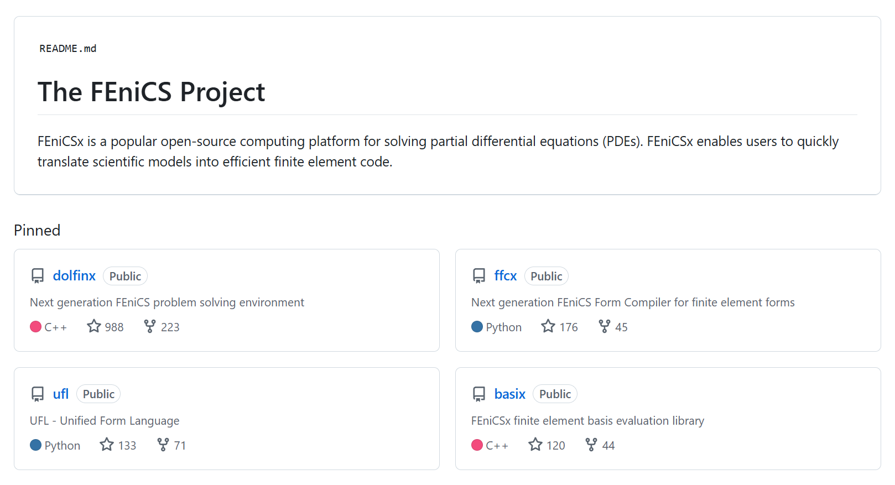
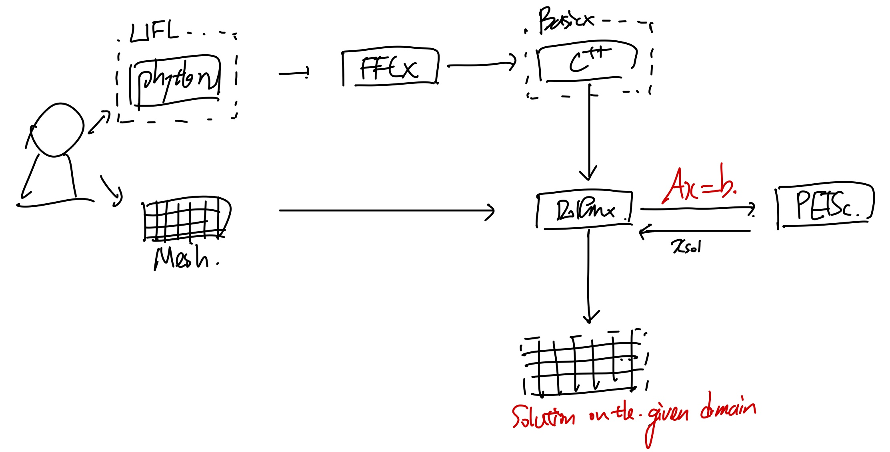
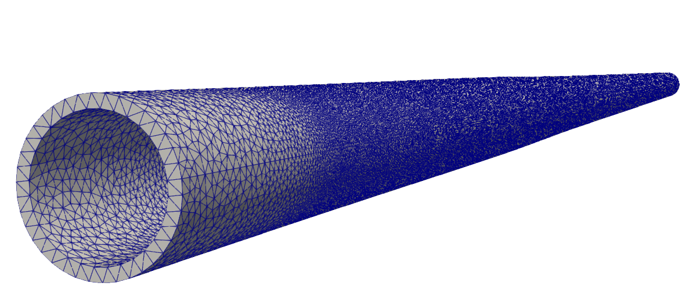
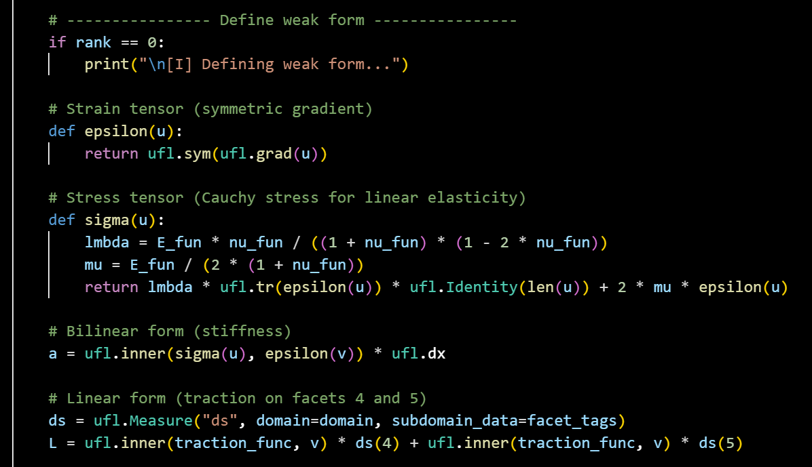
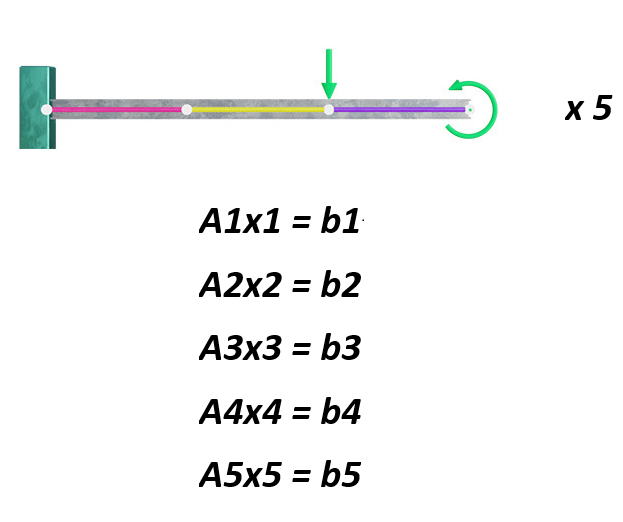
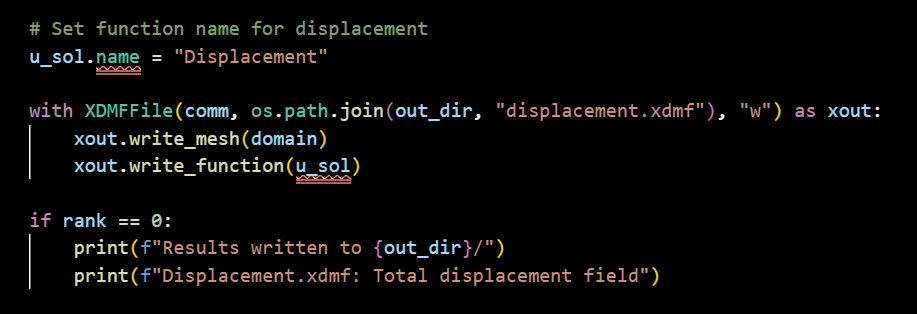

ch (?) Fenicsx and Parallel Computing
나이가 먹을수록 기억력이 안좋아진다.
사실 tistory는 더이상 관리를 안하는 블로그 API이지만,
그럼에도 기억보관소로 사용중이다.
아무튼, 이번시간에는 2가지를 정리해보자.
1. FEniCS
2. Parallel Computing
(fenics 내부에 parallel compuating이 존재)

영국에서 만든 opensource FEM 연산 library
https://fenicsproject.org/
FEniCS
Open-source finite element library
fenicsproject.org
우리가 지금 풀고 있는 FEM문제를
open source code 로 공개한 꽤 각광받고 있는 library이다.
2003년부터 University of Cambridge LAB에서부터 계발되어 왔고,
주로 Solid mechanics structure problem을 풀다가,
지금은 Heat, Navier's Stokes, ElectroMagnetic equation까지 확장하여,
PDE를 FEM으로 푸는 library로 확장되었다.
전체 workflow는 다음과 같다.

1. 일단 풀고자하는 문제를 .msh형태로 gmsh에서 mesh를 제작
2. .msh 를 .xdmf로 전환하여 FEniCs가 읽을 수 있도록
(최근 dolfinx.io.gmshio에서는 .msh바로 읽기 가능)
3. 이후에 FEniCS에서 연산을 진행하면, 결과파일이 xdmf로 저장된다.
4. 최종적으로 paraview에서 visualize.
이중에서 FEniCS내부를 살펴보자.
https://github.com/FEniCS
FEniCS Project
FEniCS Project has 18 repositories available. Follow their code on GitHub.
github.com
위 github에서 Project를 열어보면 4개의 핵심 package가 존재한다.

(github에 들어가게 되면, 어떻게 사용하는지 class, method전부 설명이 되어있고,
오늘은 사용방법보다는 어떤식으로 구동되는지에 집중을 해보자)
총 process를 diagram으로 그려보면 다음과 같다.
하나씩 프로세스를 이해해보자.

total process of fenics
1. User make python code and mesh

User가 먼저 fenics에서 제공한 문법에 맞게 어떻게 문제를 풀것인지 코드를 작성한다.
(오늘은 python 코드 내용을 어떻게 구현해야하는 지는 다루지 않을것)

그리고 풀문제의 MESH를 xdmf or .msh형식으로 전달한다.

example of a mesh

inner tetrahedrone of inner mesh
여기서핵심은, UFL이 우리가 정말
수학적 문법
에 맞게 python 코드를 작성할 수 있는 tool이라는 점이다.

Example of Linear elastic Weak form Ufl equation.

fem의 핵심은 Strong form -> weak form이고,
최종적인 weakform의 식을 그대로 ufl library를 이용해서 구현할 수 있다.
(가장 큰 장점: 수학적 문법이 python 코드로 가능)
2. Inner Kernel FFCX changes Python to C++

결국 컴퓨터 CPU 노드 연산을 하기 위해서 우리는 C++로 언어를 바꾸어야한다.
이 작업을 이제 FFCX libaray가 진행을 해준다.
더하여
Basix
는
FEM의 가장 cornerstone인 Basis function을 정의하고, domain에 맞게 함수를 설정한다.

Simple hat form basis function(Linear)
뿐만아니라, 우리는 연산을 진행할때, derivative or scalar, vector function value모두
reference frame으로 전환후 연산을 진행한다.
여기서 reference frame과 실제 spatial frame의 mapping도 basix가 담당한다.

(쉽게 말해 BASIX는 FEM의 핵심이 되는 기본적인 연산들을 담당한다)
3. Dolfinx 는 위의 연산 함수들과 input output을 종합해주는 즉 orchestration을 진행한다.
(가장 핵심)

https://docs.fenicsproject.org/dolfinx/main/python/api.html
API reference — DOLFINx 0.10.0.0 documentation
© Copyright 2025, FEniCS Project.
docs.fenicsproject.org
python코드를 작성하실때 가장 핵심이 되는 library이고 자세한 API는 위 싸이트에 다 정의되어 있다.
(현시점 version 0.10)

API reference screenshot
4. Solve the problem
결국 doflinx가 하는일은 A, b를 weak form에서 정의하는 일이다. 우리가 구하고 싶은 것은 x
(Ax = b 를 컴퓨터에서 어떻게 풀지는 우리가 ch1~8 까지 다루어 왔다)
https://jeffdissel.tistory.com/244
Ch8. Krylov subspace
Ax = b풀고있다 우리는. #푸는방식direct method -> classical iterative method -> 를 지나서, Krylov subspace iterative method에 도착하였다. Motivation:우리가 기존에 풀던 classical iterative method는 sparse large matrix를 풀기
jeffdissel.tistory.com
가장 대표적인 Krylov subspace method -> Preconditioner Conjugate gradient or GMRES 이 두가지를 가장 많이 사용

이미 굉장한 수학적? 개발자들이 연산하는 C++ package를 개발해 왔고, 그중에 PETSc를 피닉스는 사용한다.

이 라이브러리의 핵심은 단순히 GMRES, PCG를 쓰는게 아니라,
병렬연산에 최적화되어 있다는 점이다.
사실 병렬연산 진행은 OPEN MPI package를 통해 실행을 한다.
FEM에서 푸는 문제 자체가 굉장히 A 행렬이 거대하기 때문에, 우리는 나누어서 대부분 연산을 한다.
Open MPI는 cluster즉 여러개의 컴퓨터를 가지고 연산을 할때 사용되고,
밑에 보시는 것처럼 컴퓨터 여러개 끼리 서로 communicate하면서 각자의 연산을 할 수 있게 해준다.

예를들어, 우리가 아래의 fixed beam 문제를 풀때,
element 3개 에따라서 computer 3개로 나눈다고 하자.

보시는 것처럼 element단위로 쪼개개 되면, shared node가 생기게 된다.
따라서 computer끼리 communication이 필요한 것.
위 작업을 쉽게 진행해주는 package가 바로 OPEN MPI인 것.
반대로, 만약에 우리가 5개의 독립적인 문제를 푼다고 한다면???
5개의 문제끼리는 행렬이 아예 다르기 때문에 서로 shared 할 필요가 없다.
(즉, communication setting을 OPEN MPI처럼 굳이 하지 않아도 된다)

5 Independent Static Problems
이때 사용되는 package는 OPEN MPI가 아닌 (햇갈리는)이름인 OPENMP


즉 한개의 matser computer 가 shared Memory를 가지고 있고,
연산을 여러개의 CPU로 나누어 진행하는 방식이다.
5. Output the problem
자 이렇게 병렬연산을 진행한 이후에, dolfinx는 xdmf형식으로 output을 만들어 준다.

고체 문제에서 solution x - displacement이므로,

위 코드를 python에서 실행하면,
paraview에서 displacment를 visualize할 수 있게 된다.

여기까지 FENIC에서 workflow를 전체적으로 이해해보았고,
한번 어떤 흐름으로 구동하는지를 이해하면,
이후 python코드를 작성하는데 당연히 도움이 된다고 생각하여,
작성하였다.